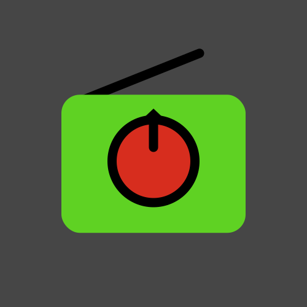

Válassz rádiót

Kedvencek
Minden rádió
Beállítások
Sötét, világos vagy automatikus színmód az eszköz beállításai szerint
A lejátszás automatikus leállítása megadott idő múlva
Utoljára hallgatott rádió betöltése az alkalmazás/weboldal megnyitásakor
Ha szakadozik az internet, segít az újrapróbálkozásban (Kísérleti funkció)